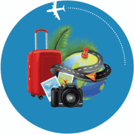
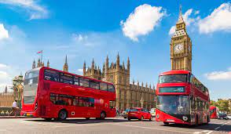
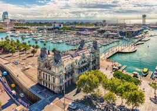
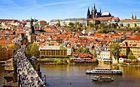
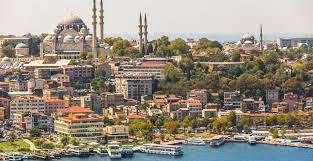
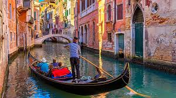
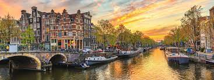

Faça com que sua viagem a Europa seja inesquecível!
Veja aqui nossas dicas para os melhores roteiros e aproveite cada minuto da sua viagem.
Para decidir qual o destino ideal é importante definir o objetivo da viagem, as opções variam desde cidades
com história milenar preservada, a praias paradisíacas e megalópoles que misturam entre o moderno e o tradicional.
Melhores destinos para visitar na Europa
1) Paris, França

Paris foi eleita a melhor cidade europeia para se visitar, pois, esbanja charme, seja na arquitetura ou no vestuário das pessoas.
A capital da França está situada entre as cruvas do Rio Sena e possui grande especialidade em vinhos, queijos e perfumes.
2) Londres, Reino Unido
 Londres é um verdadeiro parque mundial, rodeada de imigrantes de todas as partes do mundo, inclusive brasileiros, que contribuem
como mais de cem mil pessoass na população local: Londres.
O centro da capital da Inglaterra é um dos principais polos comerciais do mundo, sediando algumas das principais empresas
multinacionais e a capital é conhecida pela sua badalação nos bares, paixão por futebol e pelo charme da Família Real.
3) Creta, Grécia

Em seguida, surge na lista dos melhores lugares na Europa o primeiro paraíso da Grécia, sendo esta a maior e mais populosa ilha do país.
O local é muito preparado para o turismo, tanto que possuí três aeroportos e recebe estrangeiros do mundo todo em suas praias,
principalmente em agosto, no auge do verão europeu.
4) Barcelona, Espanha
 Barcelona é a cidade que mais recebe turistas na Espanha. Barcelona é moderna e tradicional, pois ao mesmo tempo que é mundialmente
famosa pela badalação da vida noturna,
preserva sua natureza, arquitetura e, principalmente, a arte local e todos os gênios que dela fizeram história.
5) Praga, República Tcheca
Praga é outra cidade muito visitada por jovens em relação a vida noturna, mas que vai muito além disso. Falo de uma capital da
República Tcheca com um patrimônio arquitetônico impressionante, do povo que revolucionou e cerveja e que a mais consome no mundo;
sem contar que a cidade foi projetada para ser conhecida a pé, por conta das principais atrações serem próximas umas às outras.
6) Istambul, Turquia
 Chego a Istambul, que simplesmente é a quarta maior cidade do mundo e, nesse imenso território, reserva muitas atrações incríveis na Turquia.
Estou falando de um lugar rico em belos cenários urbanos, centros religiosos e, claro, o tão requisita e famoso comércio.
7) Veneza, Itália
 Chego à capital do romantismo, onde você estaciona o carro fora da cidade e navega de barco em um clima inigualável. Veneza está situada
no noroeste da Itália e possui como identidade única entre os cartões postais do mundo o fato de ser toda cortada por rios, que misturados
a arquitetura local formam um cenário encantador.
8) Amsterdam, Holanda
 Fecho a lista com chave de ouro ao falar do charme único da capital da Holanda. A verdade é que Amsterdam possui uma arquitetura única,
composta pelas suas centenas de pontes, canais marítimos e moinhos de vento; aproveite para ver de perto as tulipas, as diversas opções de
compras e, obviamente, a curiosidade pelas famosas “vitrines”.
Gostou das dicas? Precisa de mais informações, entre em contato: